Tratamentul bazat pe dovezi față de practica din România
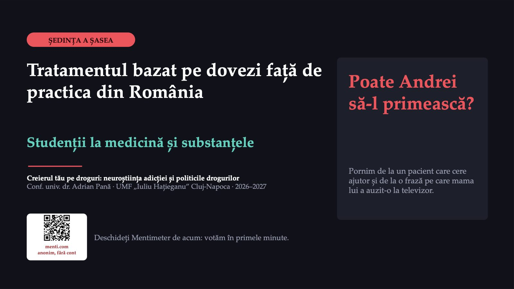
1 / 48Bine ați venit la a șasea ședință. Titlul pune două întrebări: ce spun dovezile despre tratamentul dependenței de opioide și ce se întâmplă cu el în România. Le urmărim pe un pacient, pe un comitet de județ și pe un coleg care nu cere ajutor.
Marți dimineață, în Județul B
![ACTUL ÎNTÂI · CABINETUL DIN JUDEȚUL B Marți dimineață, în Județul B ANDREI, TREIZECI ȘI PATRU DE ANI Fost șofer. De câțiva ani își injectează heroină. A încercat de trei ori să se lase singur, acasă. De fiecare dată a reluat consumul în câteva zile. Are o fiică de șase ani, pe care o vede la sfârșit de săptămână. „Vreau să mă las. Am încercat de trei ori singur și n-am putut. Ce pot să iau?” Mama lui, de pe hol: „Metadona e tot un drog.” Ce îi răspundeți lui Andrei și ce îi spuneți mamei? Caz construit pentru curs; detaliile sunt plauzibile, nu reale.](diapozitive/C06/002.jpg) 2 / 48
2 / 48Sunteți în stagiu la același cabinet de medicină de familie din Județul B. Andrei vine singur, într-o marți dimineață, și spune o frază pe care medicul de familie o aude rar: vreau să mă las. Mama lui îl așteaptă pe hol și a auzit la televizor că metadona este tot un drog.
Tratamentul care l-ar ajuta cel mai probabil este cel la care se gândește mama lui cu teamă.
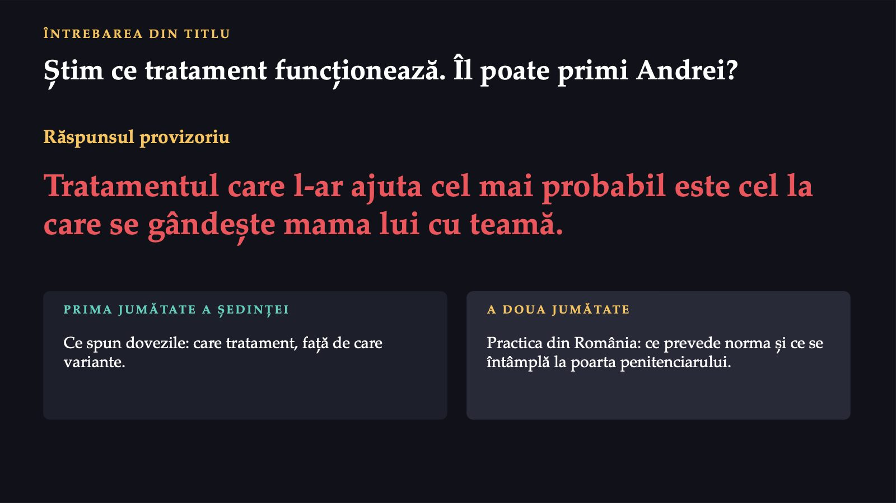
3 / 48Andrei pune, fără să știe, întrebarea din titlul ședinței. Știm ce tratament funcționează; întrebarea este dacă îl poate primi în Județul B. Răspunsul provizoriu, dat de la început: cel mai probabil, tratamentul la care se gândește mama lui cu teamă. Care este el, hotărâți voi, în minutul următor.
Ce tratament are cele mai solide dovezi pentru Andrei?
 4 / 48
4 / 48Prima decizie. Votați singuri, fără să vă uitați la colegi: ce tratament are cele mai solide dovezi pentru Andrei?
Ce tratament are cele mai solide dovezi pentru Andrei?
![MENTIMETER · AL DOILEA VOT DUPĂ DOUĂ MINUTE CU COLEGUL DE BANCĂ Ce tratament are cele mai solide dovezi pentru Andrei? Convingeți-l pe colegul care a votat altfel. Apoi votați din nou, pe aceleași variante. A O dezintoxicare de o săptămână, în spital, apoi externarea fără medicație. B Tratament de întreținere cu metadonă sau buprenorfină, cu sprijin psihosocial, pe termen lung. C Naltrexonă în tablete, după dezintoxicare, ca să blocheze efectul heroinei. D Consiliere psihologică săptămânală, fără medicamente. Răspundeți pe telefon, la codul afișat. menti.com anonim, fără cont](diapozitive/C06/005.jpg) 5 / 48
5 / 48Aveți două minute ca să-l convingeți pe colegul de bancă care a votat altfel. Apoi votați din nou, pe aceleași variante.
Ce s-a schimbat după discuție?
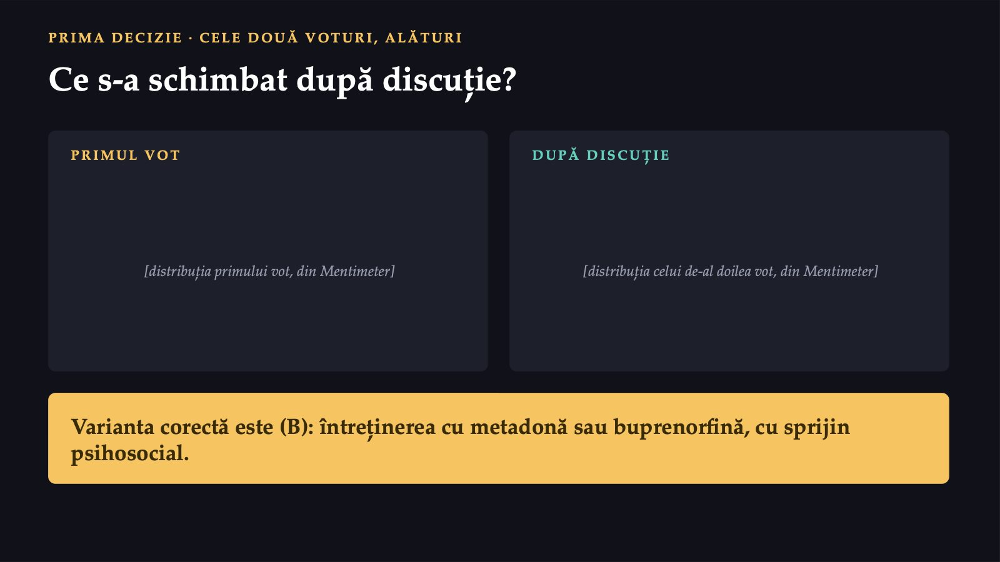
6 / 48Iată cele două voturi, unul lângă altul. Varianta corectă este (B): după standardele UNODC și OMS, întreținerea cu metadonă sau buprenorfină, împreună cu sprijin psihosocial, este intervenția farmacologică cea mai eficace pentru dependența de opioide.
De ce (B), și nu (A) sau (D)
![CE SPUN DOVEZILE DESPRE FIECARE VARIANTĂ De ce (B), și nu (A) sau (D) (A) Dezintoxicarea tratează sevrajul, nu dependența. Fără un tratament care continuă, cei mai mulți reiau consumul, cu toleranța scăzută: doza de dinainte îi poate omorî. (B) Consumă mult mai puțină heroină, mor mai rar, au mai puține complicații, transmit mai rar HIV și hepatitele, își refac mai bine viața socială și profesională. (D) Consilierea este utilă ca parte a tratamentului, nu ca tratament întreg: sprijinul singur nu oferă protecția medicamentului. Sursa: UNODC și OMS, standardele internaționale pentru tratamentul tulburărilor de consum (2020).](diapozitive/C06/007.jpg) 7 / 48
7 / 48Varianta A este cea pe care o cer cel mai des familiile, pentru că pare să rezolve problema repede. Andrei a încercat-o deja de trei ori. Varianta B are cele mai solide dovezi: pacienții tratați cu metadonă, față de cei tratați fără medicament, consumă mult mai puțină heroină, mor mai rar și își refac mai bine viața. Varianta D este utilă numai alături de medicament.
Naltrexona: logică pe hârtie, barieră pentru Andrei
![DE CE NU (C) Naltrexona: logică pe hârtie, barieră pentru Andrei Trial american: naltrexona injectabilă față de buprenorfină-naloxonă. Tratamentul a putut fi început la: Buprenorfină-naloxonă: 270 din 287 94% Naltrexonă injectabilă: 204 din 283 72% Dintre cei la care naltrexona nu a putut fi începută, 70 din 79 (89%) au recăzut repede. Pentru Andrei Naltrexona cere o dezintoxicare completă înainte de prima doză: exact pasul la care a eșuat de trei ori. Andrei este motivat, dar dovezile nu o susțin ca prim tratament. Surse: Lee și colab. (2018); Minozzi și colab. (2011), Cochrane; UNODC și OMS (2020).](diapozitive/C06/008.jpg) 8 / 48
8 / 48Naltrexona în tablete pare logică: blochează receptorul. Dar tableta trebuie luată zilnic și nu face nimic plăcut. Un trial american a comparat injecția lunară cu buprenorfina-naloxonă. Problema a apărut la început: naltrexona nu poate fi dată decât după un sevraj complet, iar mulți pacienți nu ajung până acolo.
Receptorul opioid este o broască de ușă
![TREI FELURI DE A ACȚIONA PE ACELAȘI RECEPTOR Receptorul opioid este o broască de ușă HEROINA Cheia care deschide ușa complet și iese repede. Euforie scurtă, sevraj, nevoia unei noi doze de mai multe ori pe zi. METADONA Tot o cheie care deschide ușa, un agonist, dar intră încet și rămâne mult. O dată pe zi, pe gură, în doză stabilă: ține sevrajul și pofta departe. BUPRENORFINA Cheia care deschide ușa numai pe jumătate. Calmează sevrajul și pofta; efectul asupra respirației are un plafon. NALTREXONA Cheia care intră în broască și nu deschide deloc. Nu calmează nimic; doar împiedică heroina să acționeze, cât timp pacientul o ia.](diapozitive/C06/009.jpg) 9 / 48
9 / 48Ca să înțelegeți de ce metadona nu este tot un drog, gândiți-vă la receptorul opioid ca la o broască de ușă. Heroina este o cheie care intră repede și iese repede. Metadona deschide la fel, dar lent și o dată pe zi. Buprenorfina deschide pe jumătate. Naltrexona intră în broască și nu deschide deloc.
Tratamentul cu agoniști opioizi
![PRIMUL TERMEN NOU Tratamentul cu agoniști opioizi Tratamentul de lungă durată al dependenței de opioide cu un medicament care acționează pe același receptor ca heroina, dar lent, controlat și în doză stabilă: metadona sau buprenorfina. În legislația românească: „tratament de substituție”. Se combină cu sprijin psihosocial. DE CE SPERIE CUVÂNTUL „SUBSTITUȚIE” Diferența nu este în moleculă, ci în ce face medicamentul în viața pacientului: heroina de pe stradă aduce supradoză, infecții, datorii și închisoare; metadona dintr-o farmacie aduce o zi obișnuită. În Europa: 61% metadonă, 36% buprenorfină.](diapozitive/C06/010.jpg) 10 / 48
10 / 48Primul termen nou: tratamentul cu agoniști opioizi. În legislația și în rapoartele românești se numește, de obicei, tratament de substituție. Cuvântul explică o parte din teama mamei lui Andrei: pare că un drog ia locul altuia. Diferența este în ce face medicamentul în viața pacientului.
„Metadona doar înlocuiește un drog cu altul.”
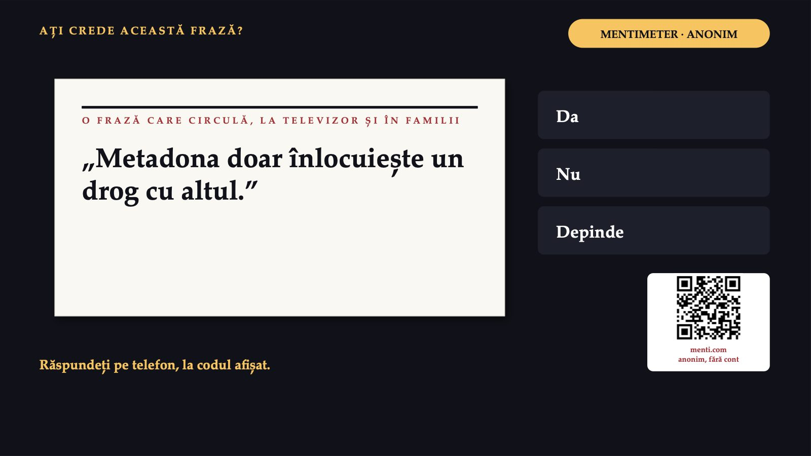
11 / 48O frază care circulă, la televizor și în familii: metadona doar înlocuiește un drog cu altul, iar adevăratul tratament este să te lași de tot. Ați crede-o?
Fraza măsoară alt rezultat
![AȚI CREDE ACEASTĂ FRAZĂ? Fraza măsoară alt rezultat REZULTATUL DIN FRAZĂ Abstinența la o lună. Pentru un pacient ca Andrei, care a încercat de trei ori, „a se lăsa de tot” este tocmai ce nu a reușit. REZULTATUL CARE CONTEAZĂ Pacientul este în viață și lucrează peste cinci ani. Standardele internaționale nu pun abstinența ca singură țintă: pe primul loc stau reducerea consumului, a deceselor și a bolilor. Sursa: UNODC și OMS, standardele internaționale pentru tratamentul tulburărilor de consum (2020).](diapozitive/C06/012.jpg) 12 / 48
12 / 48Fraza nu greșește din rea-voință; greșește pentru că măsoară alt rezultat. Întâi, ce înseamnă să te lași de tot pentru un pacient care a încercat de trei ori. Apoi, ce rezultat contează: abstinența la o lună sau faptul că pacientul trăiește și lucrează peste cinci ani.
Retenția în tratament
![AL DOILEA TERMEN NOU Retenția în tratament Proporția pacienților care rămân în tratament după o anumită perioadă. „Un medicament excelent pe care pacienții îl abandonează nu îi protejează.” Aproape toate câștigurile apar numai cât timp pacientul rămâne în tratament: mai puțină heroină, mai puține decese, mai puține infecții. METADONĂ ȘI BUPRENORFINĂ Ambele funcționează. La doze flexibile, buprenorfina a păstrat în tratament mai puțini pacienți decât metadona. Alegerea ține de pacient, de ce există în județ și de cine o poate prescrie.](diapozitive/C06/013.jpg) 13 / 48
13 / 48Al doilea termen nou: retenția în tratament. Contează atât de mult pentru că aproape toate câștigurile tratamentului apar numai cât timp pacientul rămâne în el. De aceea buprenorfina și metadona se compară mai ales după cât de bine își păstrează pacienții.
Ce îi spuneți mâine unui coleg
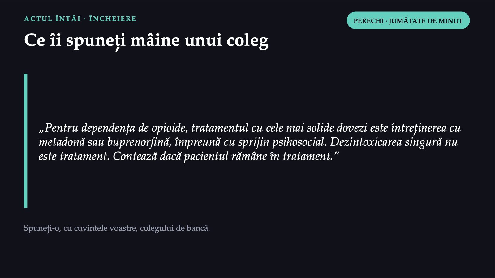
14 / 48Pentru dependența de opioide, tratamentul cu cele mai solide dovezi este întreținerea cu metadonă sau buprenorfină, împreună cu sprijin psihosocial. Dezintoxicarea singură nu este tratament, iar naltrexona este utilă mai ales pacienților motivați să se abțină.
Opt luni mai târziu
![ACTUL AL DOILEA · IEȘIREA PE POARTĂ Opt luni mai târziu 1 Județul B nu are niciun program de substituție. 2 Medicul de familie nu a prescris niciodată acest tratament; îl trimite la un centru din București. 3 Andrei merge de două ori, apoi renunță: drumul durează o zi, iar angajatorul nu-i mai dă liber. 4 Este condamnat pentru un furt. În penitenciar primește metadonă. 5 Eliberat într-o vineri după-amiază, cu actele și cu o sacoșă. 6 Nimeni nu i-a programat continuarea tratamentului. Când este cel mai mare riscul ca Andrei să moară? Caz construit pentru curs; detaliile sunt plauzibile, nu reale.](diapozitive/C06/015.jpg) 15 / 48
15 / 48Opt luni mai târziu. În Județul B nu există niciun program de substituție, iar medicul de familie nu a prescris niciodată acest tratament. Andrei merge de două ori la București, apoi renunță. Ajunge în penitenciar, unde primește metadonă, și este eliberat într-o vineri după-amiază. Nimeni nu i-a programat continuarea.
157
![CAZUL ARE O BAZĂ ÎN DATE Ce spune norma și ce arată cifrele din 2024 NORMELE METODOLOGICE · EXTRAS „Prescrierea și supravegherea tratamentului de substituție se fac de către medicul curant din unitățile spitalicești și ambulatorii, precum și din centrul de tratament pentru toxicomani.” Medicul de familie nu este numit în acest articol. Alt articol îi dă medicului de familie prescripția pentru continuarea după externare; dacă se aplică și substituției, norma nu spune. 157 beneficiari ai programului cu metadonă din penitenciare, în 2024 Reducerea riscurilor: numai în București, în 2024. Nu este tratament de substituție. Unde se oferă substituția în afara Bucureștiului, raportul nu spune. Surse: normele metodologice în vigoare; raportul național în domeniul drogurilor, 2025.](diapozitive/C06/016.jpg) 16 / 48
16 / 48Cazul este construit, dar fiecare pas al lui are o bază în date. Norma în vigoare numește pentru prescrierea substituției unitățile spitalicești și ambulatorii și centrul de tratament; medicul de familie nu este numit în acest articol. În penitenciare, programul cu metadonă a avut 157 de beneficiari în 2024, iar reducerea riscurilor a fost disponibilă numai în București.
Când este cel mai mare riscul ca Andrei să moară?
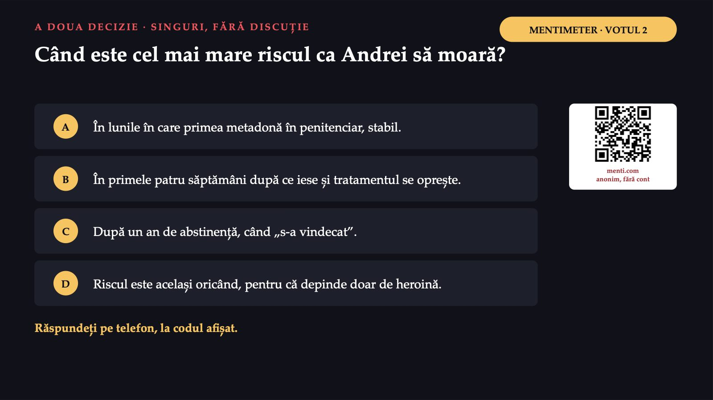
17 / 48A doua decizie. Votați singuri: când este cel mai mare riscul ca Andrei să moară?
Când este cel mai mare riscul ca Andrei să moară?
![MENTIMETER · AL DOILEA VOT DUPĂ DOUĂ MINUTE CU COLEGUL DE BANCĂ Când este cel mai mare riscul ca Andrei să moară? Convingeți-l pe colegul care a votat altfel. Apoi votați din nou, pe aceleași variante. A În lunile în care primea metadonă în penitenciar, stabil. B În primele patru săptămâni după ce iese și tratamentul se oprește. C După un an de abstinență, când „s-a vindecat”. D Riscul este același oricând, pentru că depinde doar de heroină. Răspundeți pe telefon, la codul afișat. menti.com anonim, fără cont](diapozitive/C06/018.jpg) 18 / 48
18 / 48Două minute: convingeți-l pe colegul care a votat altfel. Apoi votați din nou, pe aceleași variante.
Ce s-a schimbat după discuție?
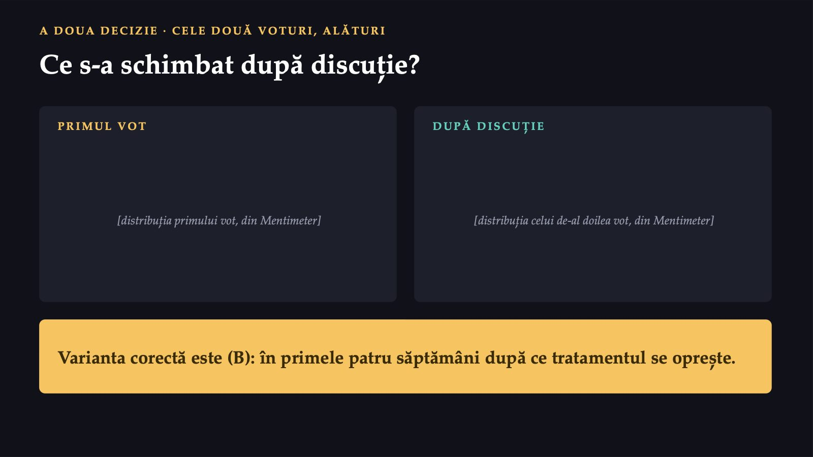
19 / 48Iată cele două voturi, alături. Varianta corectă este (B): riscul de deces al unei persoane dependente de opioide este cel mai mare în primele săptămâni după ce tratamentul se oprește. Eliberarea din penitenciar fără continuarea medicației este o asemenea oprire.
19 cohorte
![CE ARATĂ COHORTELE Două ferestre de risc 19 cohorte 122 885 de persoane tratate cu metadonă și 15 831 cu buprenorfină, urmărite ani de zile În tratament cu metadonă, pacienții mor de circa trei ori mai rar decât în afara lui. FEREASTRA DE IEȘIRE DIN TRATAMENT Primele patru săptămâni după oprirea metadonei 32,1 Lunile care urmează 13,5 decese la 1 000 de persoane-ani, într-un subgrup de șase cohorte de metadonă Fereastra de început: la începutul metadonei riscul este mai mare, dar diferența, luată singură, nu este sigură statistic. De aceea doza începe mică și crește treptat. Sursa: Sordo și colab., BMJ (2017), meta-analiză a cohortelor; UNODC și OMS (2020).](diapozitive/C06/020.jpg) 20 / 48
20 / 48Ca să vedem mortalitatea, avem nevoie de multe persoane urmărite mulți ani. O meta-analiză a adunat 19 cohorte. Ea arată două ferestre de risc: începutul tratamentului și, mai periculoasă, ieșirea din tratament. Cifrele pe intervale vin dintr-un subgrup de șase cohorte de metadonă.
Toleranța scade repede
![DE CE IEȘIREA? Toleranța scade repede După câteva săptămâni fără opioide, corpul nu mai suportă doza veche. Cine revine la vechea doză poate muri chiar în prima seară. (A) Tratamentul stabil este perioada cea mai sigură. (C) Riscul nu crește odată cu timpul: după primele patru săptămâni scade la 13,5. (D) Ignoră exact ce poate schimba medicul. CE POATE FACE UN MEDIC Programează continuarea înainte de eliberare. Explică pacientului și familiei de ce toleranța a scăzut. Recomandă să nu fie singur dacă reia consumul. Naloxona, antidotul supradozei, pentru acasă, acolo unde există. Surse: Sordo și colab. (2017); UNODC și OMS (2020). Practica de la eliberare în România: neverificată.](diapozitive/C06/021.jpg) 21 / 48
21 / 48De ce ieșirea? Pentru că toleranța scade repede, iar perioadele recente de abstinență sunt un factor major de risc pentru supradoza mortală. Eliberarea fără o programare îl pune pe Andrei exact în fereastra de risc. Ce se face azi în România la eliberarea din penitenciar, notele nu au verificat.
1 686
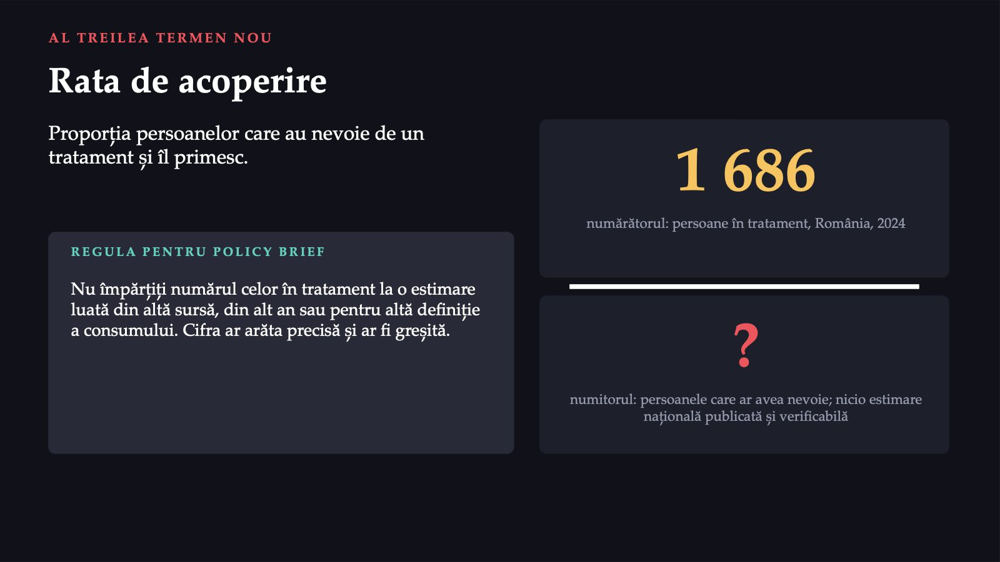
22 / 48Al treilea termen nou: rata de acoperire. Pentru România avem numărătorul, cei aflați în tratament. Pentru numitor nu am găsit o estimare națională publicată și verificabilă. De aceea, regula pentru policy brief este să nu calculați o rată împărțind la o estimare luată din altă sursă, din alt an sau pentru altă definiție.
1 757
![ROMÂNIA ȘI EUROPA Ce știm și ce nu știm despre tratament 1 757 persoane în tratament de substituție, în 2023 443 → 311 persoane intrate în tratament în cursul anului, din 2023 în 2024 682 → 390 cererea de tratament pentru opioide, din 2023 în 2024 NU ȘTIM Câți furnizori civili există și unde, câte persoane dependente de opioide sunt în fiecare județ și ce parte primește tratament. EUROPA, 2024 Dintre cele 22 de țări cu date, 14 atinseseră ținta OMS pentru 2025. În Uniune, circa o jumătate de milion de oameni primesc tratament. Surse: raportul național în domeniul drogurilor (2025); EUDA (2026).](diapozitive/C06/023.jpg) 23 / 48
23 / 48Raportul național cel mai recent permite câteva afirmații sigure: câți erau în tratament, cum au scăzut intrările și cererea de tratament pentru opioide. Ce nu știm sigur este câți furnizori civili există și ce parte din cei care au nevoie primesc tratament. Comparația europeană arată de ce contează ținta.
Județul B nu are program. Ce ar trebui să facă județul?
![INSTRUMENTUL ȘEDINȚEI · COMITETUL CU ROLURI Județul B nu are program. Ce ar trebui să facă județul? A Începe la centrul de sănătate mintală pentru adicții și continuă la medicul de familie, pentru pacienții stabili. B Orice medic de familie instruit poate începe și continua tratamentul. C Un singur program, la spitalul județean, pentru tot județul. D Situația de azi: pacienții merg la București. UN REPER, NU O REȚETĂ Standardele internaționale: asistența primară identifică și tratează tulburările de consum, sprijinită de servicii specializate, mai ales pentru cazurile severe. Nu există răspuns corect. Votul nu se notează.](diapozitive/C06/024.jpg) 24 / 48
24 / 48Ați văzut ce spun dovezile și ce spune norma. Acum, problema practică: în Județul B nu există program. Ce ar trebui să facă județul? Standardele internaționale dau un reper, nu o rețetă.
Cinci roluri, o singură decizie
![INSTRUMENTUL ȘEDINȚEI · CELE CINCI ROLURI Cinci roluri, o singură decizie MEDICUL DE FAMILIE Program plin, nicio formare în adicții. Ce condiții puneți? CENTRUL DE ADICȚII Un psihiatru cu jumătate de normă; fără autorizație pentru substituție. Ce cereți? MAMA LUI ANDREI Vreți ca fiul vostru să trăiască și să lucreze. Ce întrebați? CASA DE ASIGURĂRI Buget fix; fiecare program nou arată ce înlocuiește. Ce garanții cereți? FARMACISTUL Puteți elibera zilnic, sub supraveghere, dar aveți un seif mic. Ce soluții propuneți? Nu trebuie să fiți de acord cu rolul vostru; trebuie să-l susțineți cât mai bine două minute, apoi să ascultați.](diapozitive/C06/025.jpg) 25 / 48
25 / 48Comitetul are cinci roluri: medicul de familie din comună, coordonatorul centrului de sănătate mintală pentru adicții, mama lui Andrei, reprezentantul casei județene de asigurări și farmacistul. Fișele sunt construite pentru curs și stau în Pregătire.
Cum lucrăm în comitet
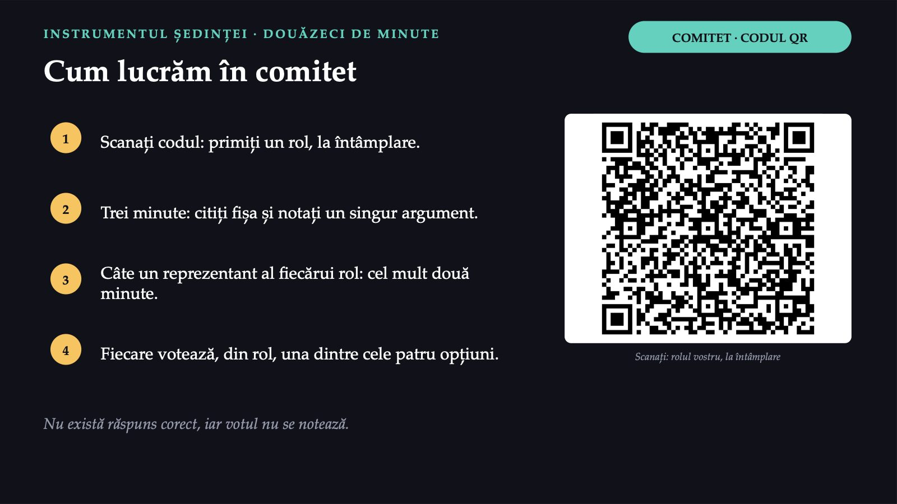
26 / 48Un cod QR vă dă rolul, la întâmplare, dintre cele cinci. Aveți trei minute ca să citiți fișa și să notați un singur argument. Apoi, pe rând, câte un reprezentant al fiecărui rol are cel mult două minute să susțină opțiunea pe care o preferă rolul lui. La sfârșit, fiecare votează, din rol, una dintre cele patru opțiuni.
Cum ar trebui organizat tratamentul în Județul B?
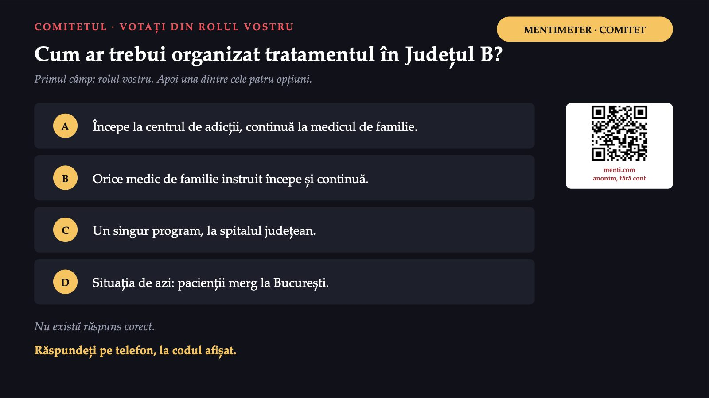
27 / 48Votați din rolul vostru. În primul câmp scrieți rolul primit, apoi alegeți una dintre cele patru opțiuni.
Cine ce a ales?
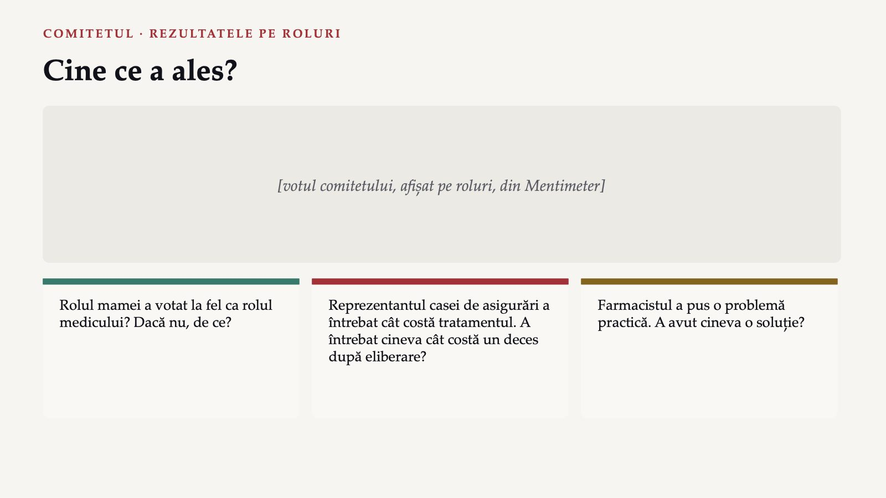
28 / 48Iată votul pe roluri. Câteva întrebări pentru după vot: rolul mamei a votat la fel ca rolul medicului? Reprezentantul casei de asigurări a întrebat cât costă tratamentul; a întrebat cineva cât costă un deces după eliberare? Farmacistul a pus o problemă practică; a avut cineva o soluție?
Ce costă fiecare opțiune, în afară de bani
![COMITETUL · COSTUL ASCUNS Ce costă fiecare opțiune, în afară de bani A Respectă norma și seamănă cu modelul standardelor, dar depinde de un centru care poate să nu aibă oameni. B Cel mai aproape de pacient, dar cere clarificarea normei, formare și sprijin pentru medicii de familie. C Pare sigură, dar Andrei a renunțat deja la un drum de o zi; un program la cincizeci de kilometri poate avea aceeași soartă. D Aici se află azi pacienții din județele fără program; câți sunt, cifrele publice nu spun. Urmăriți costul ascuns al fiecărei alegeri, mai mult decât cine câștigă.](diapozitive/C06/029.jpg) 29 / 48
29 / 48În discuție urmăriți costul ascuns al fiecărei opțiuni, mai mult decât cine câștigă. Opțiunea A respectă norma de azi, dar depinde de un centru care poate să nu aibă oameni. Opțiunea B aduce tratamentul cel mai aproape de pacient, dar cere clarificarea normei. Opțiunea C repetă bariera drumului. În opțiunea D se află azi pacienții din județele fără program.
Ce îi spuneți mâine unui coleg
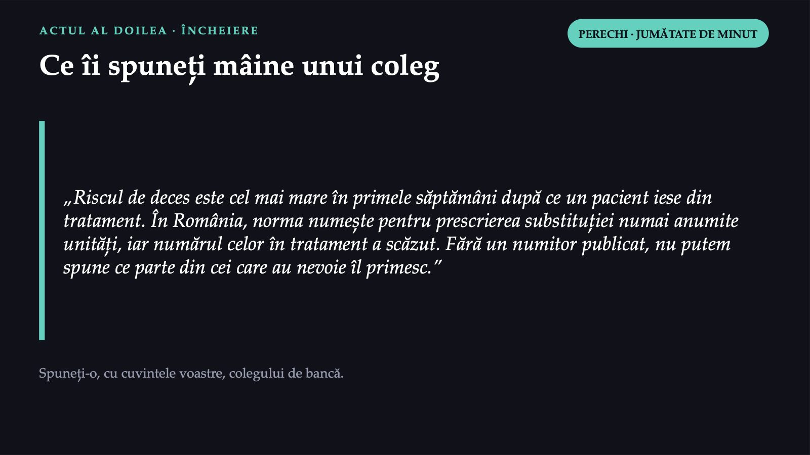
30 / 48Riscul de deces al unei persoane dependente de opioide este cel mai mare în primele săptămâni după ce iese din tratament. În România, norma numește pentru prescriere numai anumite unități, iar numărul celor în tratament a scăzut. Fără un numitor publicat, nu putem spune ce parte din cei care au nevoie îl primesc.
Pauză
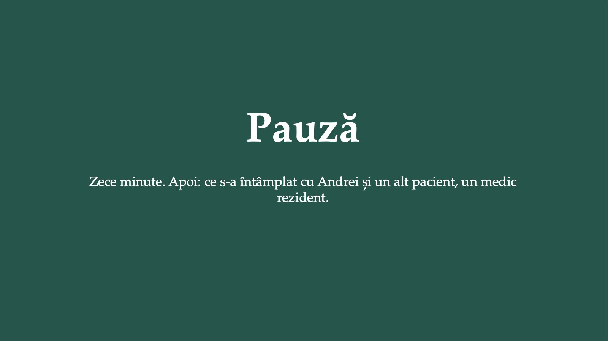
31 / 48Ne revedem peste zece minute. Apoi: ce s-a întâmplat cu Andrei și un alt pacient, un medic rezident.
Andrei, în a doua săptămână după eliberare
![ACTUL AL TREILEA · CE S-A ÎNTÂMPLAT DE FAPT Andrei, în a doua săptămână după eliberare A DOUA SĂPTĂMÂNĂ Andrei este găsit inconștient, resuscitat de echipajul ambulanței. Supraviețuiește. ÎNTRE TIMP Județul deschide un program la centrul de sănătate mintală pentru adicții. DE CÂTEVA LUNI Andrei este în tratament și lucrează din nou. Deznodământul este construit, dar plauzibil: supradoza în a doua săptămână corespunde riscului descris de cohorte pentru primele săptămâni după oprirea tratamentului. Caz construit pentru curs; detaliile sunt plauzibile, nu reale.](diapozitive/C06/032.jpg) 32 / 48
32 / 48Deznodământul lui Andrei este construit, dar plauzibil. A fost găsit inconștient în a doua săptămână după eliberare și a supraviețuit. Între timp, județul a deschis un program, iar Andrei este în tratament de câteva luni și lucrează din nou. Tratamentul care l-a ținut în viață după aceea este cel cu cele mai solide dovezi.
La gărzile de noapte
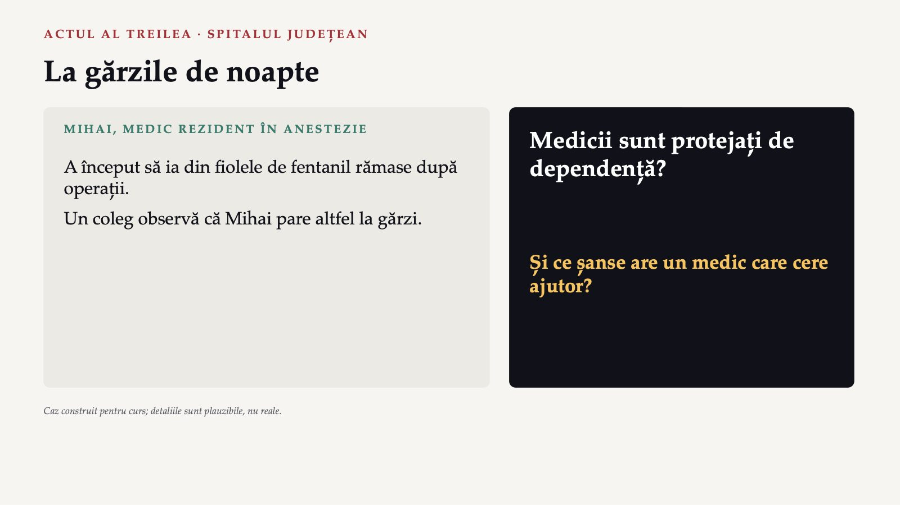
33 / 48Al treilea act schimbă pacientul. La spitalul județean, un medic rezident în anestezie, Mihai, a început să ia din fiolele de fentanil rămase după operații. Un coleg observă că Mihai pare altfel la gărzi. Întrebarea este dublă: sunt medicii protejați de dependență și ce șanse au cei care cer ajutor?
44 612
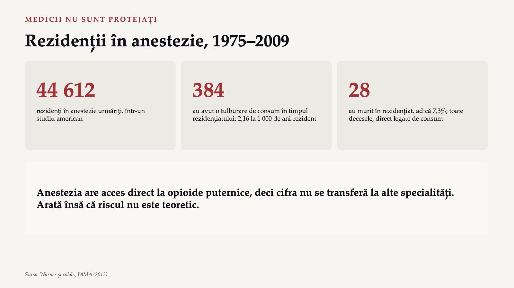
34 / 48Medicii nu sunt protejați de dependență. Un studiu american a urmărit 44 612 rezidenți în anestezie, între 1975 și 2009. Dintre ei, 384 au avut o tulburare de consum în timpul rezidențiatului, iar 28, adică 7,3%, au murit în timpul rezidențiatului. Anestezia are acces direct la opioide puternice, deci cifra nu se transferă la alte specialități.
904
 35 / 48
35 / 48Un alt studiu american a urmărit medici tratați în programe speciale de sănătate a medicilor. Programele combină tratamentul cu monitorizarea pe termen lung, inclusiv teste de urină, iar dreptul de practică depinde de rezultat. Din 904 medici, rezultatul era cunoscut la 802; 647 au încheiat tratamentul și s-au întors la practică sub supraveghere. La cinci ani, 631 aveau licență și lucrau.
Ce arată rezultatele programelor de sănătate a medicilor despre șansele lui Andrei?
![MENTIMETER · VOTUL 3 A TREIA DECIZIE · UN SINGUR VOT Ce arată rezultatele programelor de sănătate a medicilor despre șansele lui Andrei? A Că Andrei are aceleași șanse, dacă primește același tratament. B Că Andrei are șanse mai mari, pentru că este mai tânăr. C Nimic transferabil direct: medicii din programe sunt un grup selectat, monitorizat cinci ani și cu o licență de pierdut. D Că tratamentul cu agoniști opioizi nu este necesar, pentru că medicii s-au descurcat fără el. Răspundeți pe telefon, la codul afișat. menti.com anonim, fără cont](diapozitive/C06/036.jpg) 36 / 48
36 / 48A treia decizie, votată o singură dată. Ce arată rezultatele programelor de sănătate a medicilor despre șansele lui Andrei?
Varianta corectă este (C)
![A TREIA DECIZIE · RĂSPUNSUL Varianta corectă este (C) Medicii din programe sunt un grup selectat și monitorizat: oameni cu studii lungi, cu venit, cu o profesie pe care o pot pierde, urmăriți și testați ani de zile. (A) Ignoră tocmai diferența de selecție. Rezultatul lor nu se transferă la un șofer fără loc de muncă, ieșit din penitenciar. (B) Nu are sprijin: diferența ține de selecție și de monitorizare, nu de vârstă. (D) Capcană: programele nu au comparat tratamentul cu agoniști opioizi. Au folosit aproape deloc medicamente pentru dependență; unui singur medic i s-a prescris metadonă. Sursa: McLellan și colab., BMJ (2008).](diapozitive/C06/037.jpg) 37 / 48
37 / 48Varianta corectă este C. Cifrele programelor sunt bune, dar vin dintr-un grup foarte diferit de Andrei: oameni cu studii lungi, cu venit, cu o profesie pe care o pot pierde. Varianta B nu are sprijin, iar varianta D este o capcană: programele nu au comparat tratamentul cu agoniști opioizi; unui singur medic i s-a prescris metadonă.
aproape 40%
![MIHAI ȘI COLEGUL LUI Mulți medici nu cer ajutor aproape 40% dintre 5 829 de medici (2 325) ar ezita să ceară îngrijire pentru o problemă de sănătate mintală, de teama licenței Ezitarea a fost mai mare unde formularele de licențiere întrebau despre orice boală psihică din trecut. COLEGUL CARE OBSERVĂ Să tacă, să-i vorbească sau să anunțe pe cineva? Notele nu dau un răspuns. Toate cele 28 de decese din studiul rezidenților au fost direct legate de consum: tăcerea nu este fără risc. Surse: Dyrbye și colab., Mayo Clinic Proceedings (2017); Warner și colab., JAMA (2013).](diapozitive/C06/038.jpg) 38 / 48
38 / 48Pentru Mihai, rezultatul spune altceva: un medic tratat la timp are șanse bune să lucreze din nou. Problema este că mulți medici nu cer ajutor. Într-o anchetă americană, dintre 5 829 de medici, aproape 40% au spus că ar ezita să ceară îngrijire de teama consecințelor asupra licenței. Colegul care observă că Mihai pare altfel are o decizie grea; notele nu dau un răspuns.
Ce îi spuneți mâine unui coleg
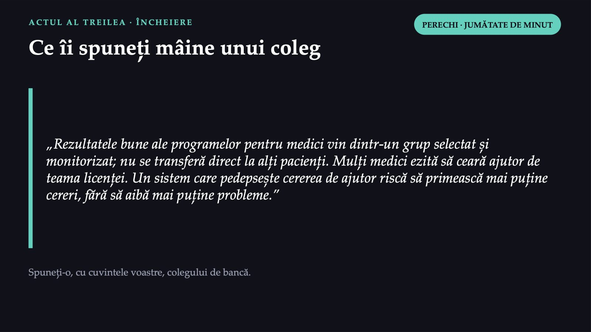
39 / 48Rezultatele bune ale programelor pentru medici vin dintr-un grup selectat și monitorizat; nu se transferă direct la alți pacienți. Mulți medici ezită să ceară ajutor de teama licenței. Un sistem care pedepsește cererea de ajutor riscă să primească mai puține cereri, fără să aibă mai puține probleme.
Nicio întrebare despre consumul vostru, nici anonimă.
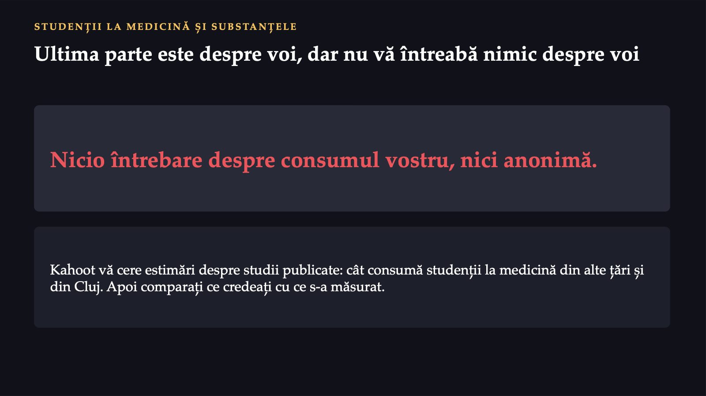
40 / 48Ultima parte a ședinței este despre voi, dar nu vă întreabă nimic despre voi. Nu există nicio întrebare despre consumul vostru, nici anonimă. Întrebările de pe Kahoot vă cer estimări despre studii publicate. Scopul este să comparați ce credeți cu ce s-a măsurat.
Canabis, alcool, depresie și cazul lui Andrei
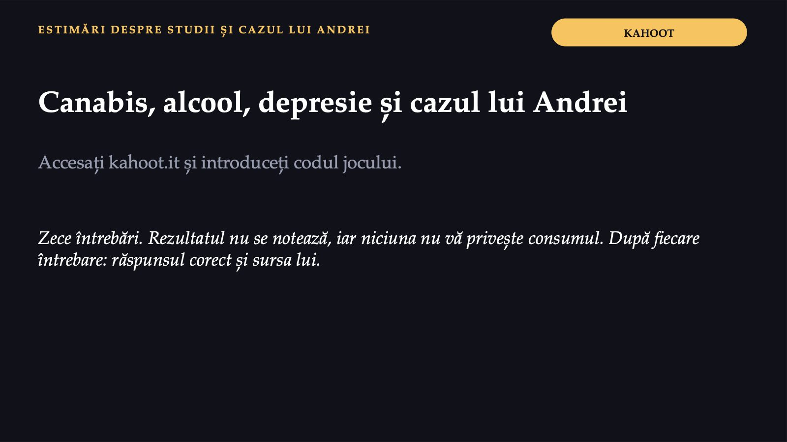
41 / 48Zece întrebări: estimări despre studiile citate și trei întrebări despre cazul lui Andrei. Rezultatul nu se notează, iar niciuna nu vă privește consumul.
Canabis la studenții la medicină, 109 studii
 42 / 48
42 / 48Cea mai recentă sinteză despre canabis a inclus 109 studii, cu 62 444 de studenți la medicină din 32 de țări. Prevalența cumulată: 29,2% au consumat cel puțin o dată în viață, 20,5% în ultimul an, 9,2% în ultima lună și 5,1% în ultima săptămână. Estimările au variat între decenii și între regiuni, cu intervale largi.
11%
![ALCOOL ȘI SĂNĂTATE MINTALĂ Alcool, depresie și medicii americani 11% dintre 8 312 de studenți francezi la medicină aveau un consum de alcool cu risc (AUDIT, prag 8 puncte); 5,5%, o dependență probabilă 27,2% dintre studenții la medicină au depresie sau simptome depresive; ideație suicidară la 11,1% 12,9% · 21,4% dintre medicii americani, bărbați și femei, îndeplineau criteriile pentru abuz sau dependență de alcool Ancheta la medicii americani: 7 288 de răspunsuri, adică 26,7% dintre cei invitați. Surse: Gillet și colab., Can J Psychiatry (2026); Rotenstein și colab., JAMA (2016); Oreskovich și colab., Am J Addict (2015).](diapozitive/C06/043.jpg) 43 / 48
43 / 48La alcool, un studiu național recent din Franța a inclus 8 312 studenți la medicină: 11% aveau un consum cu risc, iar 5,5% o dependență probabilă. Sănătatea mintală este legată de consum: o sinteză a găsit depresie sau simptome depresive la 27,2% dintre studenți. La medicii americani, 12,9% dintre bărbați și 21,4% dintre femei îndeplineau criteriile pentru abuz sau dependență de alcool.
722
![CE S-A MĂSURAT LA CLUJ Studenții Universității de Medicină din Cluj, 2021 722 de studenți, chestionar anonim 82,9% · 72,8% dintre bărbați și dintre femei au consumat alcool 15,0% · 14,9% dintre bărbați și dintre femei au depășit pragul de consum cu risc Consum cu risc: peste 14 băuturi pe săptămână la femei și peste 21 la bărbați. Cifrele nu spun nimic despre voi personal și nici despre anul vostru: spun că problema există și aici, nu numai în studiile din alte țări. Sursa: Nasui și colab., IJERPH (2021).](diapozitive/C06/044.jpg) 44 / 48
44 / 48Un studiu publicat în 2021 a întrebat 722 de studenți ai Universității de Medicină din Cluj, printr-un chestionar anonim: au consumat alcool 82,9% dintre bărbați și 72,8% dintre femei. Consumul cu risc a fost definit ca depășirea a 14 băuturi pe săptămână la femei și a 21 la bărbați; pragul l-au depășit 15,0% dintre bărbați și 14,9% dintre femei. Cifrele nu spun nimic despre voi personal.
Înainte să comparați două cifre, verificați definiția
![PENTRU CURIOȘI · DOUĂ COMPARAȚII Înainte să comparați două cifre, verificați definiția DOUĂ SINTEZE DESPRE CANABIS Una mai veche: 38 de studii, 19 932 de participanți, 31,4% (23,7–39,6). Cea mai recentă: 29,2%. Nu se contrazic: 29,2% se află în intervalul celei vechi. Diferența poate veni din studiile incluse. CLUJ ȘI FRANȚA 15,0% dintre bărbați peste pragul de risc la Cluj, față de 11% consum cu risc în Franța. Comparația nu este validă: Franța a folosit chestionarul AUDIT, cu prag de 8 puncte; Clujul a numărat băuturile pe săptămână.](diapozitive/C06/045.jpg) 45 / 48
45 / 48Două sinteze par să se contrazică: una mai veche, cu 38 de studii, a găsit 31,4%, iar cea mai recentă 29,2%. Valoarea nouă se află în intervalul de încredere al celei vechi, deci nu se contrazic. Apoi, Cluj și Franța: două definiții diferite ale consumului cu risc dau două cifre care nu se pot pune una lângă alta. Aceeași regulă ca la rata de acoperire: verificați că măsurați același lucru.
Cererea de ajutor nu este un eșec
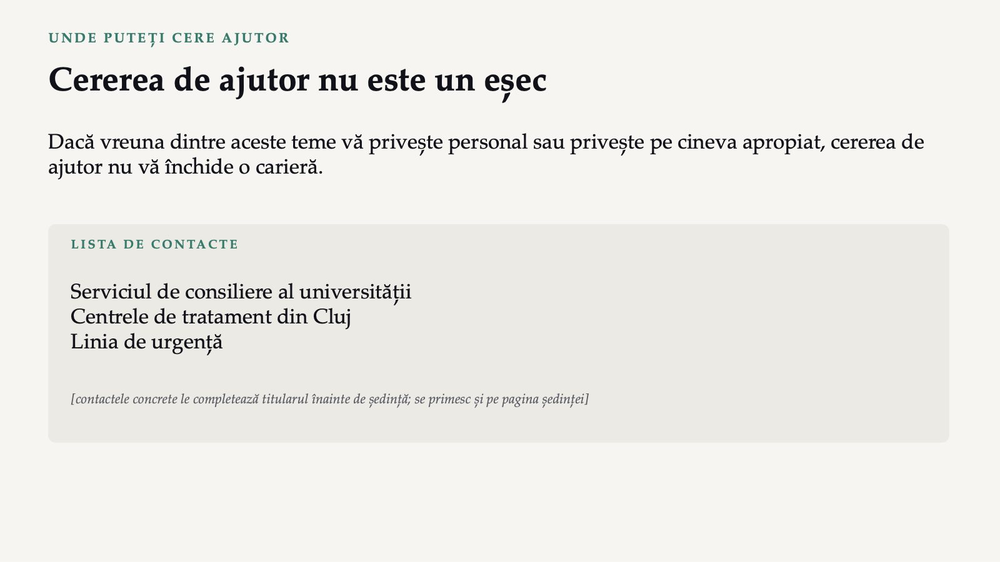
46 / 48Dacă vreuna dintre aceste teme vă privește personal sau privește pe cineva apropiat, cererea de ajutor nu este un eșec și nu vă închide o carieră. Lista de contacte o primiți de la titularul disciplinei, pe pagina ședinței.
Ce faceți diferit de mâine
![ÎN PRACTICĂ · ANDREI, ÎNCĂ O DATĂ Ce faceți diferit de mâine 1 Pacient dependent de opioide: nu doar dezintoxicare; spuneți ce tratament are dovezi și unde îl poate primi. 2 Cine iese din tratament, spital sau penitenciar: cine îi continuă medicația? Toleranța a scăzut. 3 „Metadona e tot un drog”: ce rezultat se măsoară, abstinența de mâine sau pacientul în viață și la lucru? 4 Rata de acoperire: numărător și numitor din același an și aceeași definiție; fără numitor, spuneți-o. 5 Două cifre despre consum: folosesc aceeași definiție? 6 Un coleg care pare să aibă o problemă: nu așteptați; mulți medici nu cer singuri ajutor.](diapozitive/C06/047.jpg) 47 / 48
47 / 48Șase lucruri pe care le puteți face de mâine. Primul pacient care vă cere ajutor pentru o dependență poate fi un Andrei, iar prima persoană care se poate îmbolnăvi în tăcere poate fi colegul de alături.
Trei întrebări pentru titular
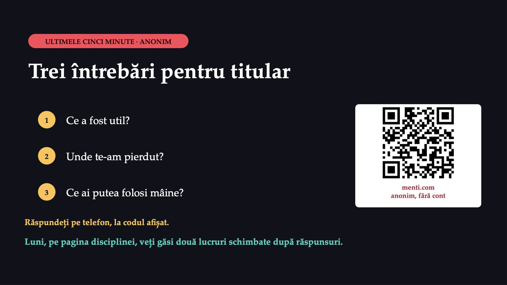
48 / 48Trei întrebări anonime, pe Mentimeter. Luni, pe pagina disciplinei, veți găsi două lucruri schimbate după răspunsurile voastre. Mulțumesc.
Săgeți sau spațiu: navigare · O: vedere de ansamblu · N: notele prezentatorului · F: ecran complet · Esc: închidere